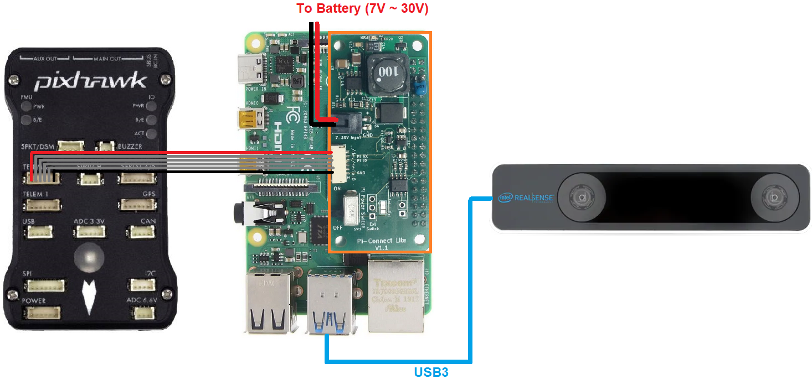
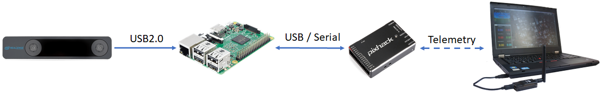

Intel RealSense T265¶
[copywiki destination=”copter,rover,blimp”]
This article explains how to setup an Intel Realsense T265 for use with ArduPilot as a substitude for a GPS allowing position control modes like Loiter, PosHold, RTL, Auto to work. This method uses a python script running on an RPI companion computer to send position information to ArduPilot without the use of ROS. The setup using ROS is here.
What to Buy¶
Raspberry Pi 4 (2GB or 4GB recommended, 8GB has issues) or Raspberry Pi 3
16GB (or larger) SD card
PiConnectLite to connect the RPI to the autopilot (optional)
Note
The RPI4 supports USB3 which allows both pose + image data to be captured from the camera. The slower RPI3 only has USB2 meaning only pose data can be captured although this is sufficient for most users.
Hardware Setup¶
{kind=link}
Download the latest APSync Ubuntu image (found here) to your PC and then flash it to the 16GB (or larger) SD card using a tool such as Etcher or Win32DiskImager and then insert it into the RPI’s SD Card slot
Mount the Intel RealSense T265 on the vehicle facing forward (see below for information other orientations) using thick double sided tape or David Sastre’s T265 mount to better isolate the camera from vibrations
Connect the Intel RealSense T265’s USB cable to one of the RPI4’s blue USB3 ports
Connect the PiConnectLite’s power cable to the battery (7V to 30V)
Connect the PiConnectLite’s serial cable to one of the autopilot’s telemetry ports (i.e. Telem1, Telem2). The only signals used in this cable are TX, RX and GND. The other signals are NC.
{kind=link}
Configure ArduPilot¶
Connect to the autopilot with a ground station (i.e. Mission Planner) and check that the following parameters are set:
SERIAL2_PROTOCOL = 2 (MAVLink2). Note this assumes the RPI4 is connected to AutoPilot “Telem2” port.
SERIAL2_BAUD = 921 (921600 baud)
Optionally set SERIAL2_OPTIONS = 1024 (Don’t forward mavlink to/from) to block the RPI4/T265 mavlink messages from reaaching the ground station
VISO_TYPE = 2 (IntelT265)
Next setup the EKF3 to use the ExternalNav for position and velocity:
EK3_SRC1_POSXY = 6 (ExternalNav)
EK3_SRC1_VELXY = 6 (ExternalNav)
EK3_SRC1_POSZ = 1 (Baro which is safer because of the camera’s weakness to high vibrations)
EK3_SRC1_VELZ = 6 (ExternalNav)
Optionally set GPS_TYPE = 0 to disable the GPS
If you wish to use the camera’s heading:
COMPASS_USE = 0, COMPASS_USE2 = 0, COMPASS_USE3 = 0 to disable all compasses
EK3_SRC1_YAW = 6 (ExternalNav)
If you wish to use the autopilot’s compass for heading:
COMPASS_USE = 1 (the default)
EK3_SRC1_YAW = 1 (Compass)
RC7_OPTION = 80 (Viso Align) to allow the pilot to re-align the camera’s yaw with the AHRS/EKF yaw before flight with auxiliary switch 7. Re-aligning yaw before takeoff is a good idea or loss of position control (aka “toilet bowling”) may occur.
After the parameters are modified, reboot the autopilot. Connect with the ground station and (if using Mission Planner) right-mouse-button-click on the map, select “Set Home Here”, “Set EKF Origin Here” to tell ArduPilot where the vehicle is and it should instantly appear on the map.
Just before flying, pick up the vehicle to a height of 1m and then put it down again. This allows the camera to calibrate its vertical scaling.
If you wish to switch between GPS and T265 see the GPS/Non-GPS Transitions wiki page
System Overview¶
{kind=link}
In a nutshell, the 6-DOF pose data (position and orientation) and confidence level obtained from the Realsense T265 will be processed by our python script and send to ArduPilot through MAVLink. Overall, the script will do the following tasks:
Obtain 6-DOF pose data and tracking confidence level data using relevant APIs from
pyrealsense2, which is the Python wrapper forlibrealsense.Perform necessary matrix transformation to align the frames of the Realsense T265 and NED frame as well as other processing steps.
Pack pose data into MAVLink message VISION_POSITION_ESTIMATE and confidence level data into a dummy message, then send them to ArduPilot at a predetermined frequency so as to not flood the Autopilot with incoming data.
Automatically set EKF home for simple setup and flying.
Note
The choice of Python is optional, and you can use any other wrappers supported by librealsense. ROS users can find the equivalent article here.
Install librealsense and pyrealsense2¶
The Realsense T265 is supported via librealsense on Windows and Linux. Installation process varies widely for different systems, hence refer to the official github page for instructions for your specific system:
Jetson (Compiling from source is needed to get the Python wrapper
pyrealsense2)
For RPi running Ubuntu, the installation process for librealsense has been detailed in this wiki. Follow the instructions to install librealsense and pyrealsense2. Since we are not using ROS, realsense-ros is not required.
Python Packages Installation¶
Establish serial connection: Connect RPi to ArduPilot with MAVLink.
If the connection between RPi-ArduPilot is established via the UART serial port, also change the setting in /boot/config.txt.
-
You should be able to run the examples provided by Intel can be found in the folder
~/librealsense/wrappers/python/examplewith Python3 command.
# Update the PYTHONPATH environment variable to add the path to the pyrealsense2 library
export PYTHONPATH=$PYTHONPATH:/usr/local/lib
cd ~/librealsense/wrappers/python/examples
# You should see a stream of data coming from the T265.
python3 t265_example.py
Install Python packages:
# pip install may require sudo, so proceed accordingly
pip install pyrealsense2
pip3 install transformations
pip3 install dronekit
pip3 install apscheduler
# Install serial packages for serial connection
sudo pip3 install pyserial
Download the script t265_to_mavlink.py. In case you have downloaded the vision_to_mavros package, it can be found in the script folder.
# Navigate to the location of the scripts
cd ~/path/to/the/script/
# Download the script if you haven’t already:
wget https://raw.githubusercontent.com/thien94/vision_to_mavros/master/scripts/t265_to_mavlink.py
chmod +x t265_to_mavlink.py
How to run¶
Before the script can be run, the
PYTHONPATHenvironment variable needs to be added with the path to thepyrealsense2library. Alternatively, copy the build output (librealsense2.soandpyrealsense2.soin~/librealsense/build/) next to the script. First, run the test scriptt265_test_streams.pyto verify installation ofpyrealsense2and the T265 is connected.
# Update the PYTHONPATH environment variable to add the path to the pyrealsense2 library
export PYTHONPATH=$PYTHONPATH:/usr/local/lib
# Navigate to the location of the scripts
cd ~/path/to/the/script/
# Download and run a test script, you should see a short stream of pose data coming from the T265 on the terminal
wget https://raw.githubusercontent.com/thien94/vision_to_mavros/master/scripts/t265_test_streams.py
chmod +x t265_test_streams.py
python3 t265_test_streams.py
Modify parameters in the
t265_to_mavlink.pyscript for your system configuration. Most importantly, find and change the following parameters in the script:
# Default configurations for connection to the FCU
connection_string_default = '/dev/ttyUSB0'
connection_baudrate_default = 921600
# Default frequency for pose and confidence messages
vision_msg_hz_default = 30
confidence_msg_hz_default = 1
# Transformation to convert different camera orientations to NED convention. Replace camera_orientation_default for your configuration.
# 0: Forward, USB port to the right
# 1: Downfacing, USB port to the right
camera_orientation_default = 0
The parameters can also be passed as input arguments from the command line. Now let’s run the main script:
# For serial connection: set udev.rules in order to get the USB available; allow permission to serial
sudo chmod 666 /dev/ttyUSB0
# When everything is working and all defaults are set:
python3 t265_to_mavlink.py
Tip
View all available input arguments: python3 t265_to_mavlink.py --help
Verification before testing¶
To verify that ArduPilot is receiving
VISION_POSITION_ESTIMATEmessages, on Mission Planner: pressCtrl+Fand click on “Mavlink Inspector”, you should be able to see data coming in. The confidence level can be viewed in messageVISION_POSITION_DELTA, fieldconfidence.
{kind=link}
Changes in value of the tracking confidence level can also be notified on Mission Planner’s message panel, HUD and by speech. These notifications will pop up when the system starts and when confidence level changes to a new state, for example from
MediumtoHigh.To enable speech in Mission Planner: Tab Config/Tuning > Planner > Speech > tick on “Enable speech”.
If there are some messages constantly displayed on the HUD, you might not be able to see / hear the confidence level notification.
If telemetry is slow, notification might be dropped. You can still see the latest message in MAVLink Inspector, message
STATUSTEXT.If telemetry is very slow, it may be flooded by VISION_POSITION_ESTIMATE messages. You can disable message forwarding by setting bit 10 in
SERIALx_OPTIONS. Be aware you will not receive VISION_POSITION_ESTIMATE in GCS anymore.
Ground Test¶
After power on, ssh into the companion computer, navigate to the script and run:
python3 t265_to_mavlink.py.Wait until the quadcopter icon appears on the map of Mission Planner.
Pick-up the vehicle and walk it around, check that the vehicle’s position movements are shown on the map. The trajectory of the vehicle on the map should reflect the real movements without too much distortion or overshoot. Below is an example of walking in a 2m x 2m square.
{kind=link}
During the test, view the confidence level and verify tracking performance. For most applications you should trust the full 6dof pose only in high confidence. If you only need the rotation (3dof), lower confidence poses can be used.
If the external navigation data is lost for any reason (tracking lost, script is interrupted etc.), reboot the Autopilot.
Tip
If you are flying in a confined environment, it might be best to go around the safety perimeter of flying, view the trajectory on the map, then remember not to fly/setup mission beyond that perimeter.
Flight Test¶
For your first flight:
Takeoff in Stabilize or Alt-Hold, check that the vehicle is stable.
Move the vehicle around and observe the position on Mission Planner to see if tracking is stable.
Switch to Loiter, but always ready to switch back to Stabilize/Alt-Hold if anything goes awry.
Otherwise, the vehicle should hover stably and able to keep its position.
Move the vehicle around (translate, rotate) at varying speed, always ready to switch back to Stabilize/Alt-Hold.
If everything works as expected, next time you can arm and takeoff in Loiter mode.
Tip
Always confirm that position feedback is running ok before switching to Loiter mode. Also look out for the safety boundary in your environment, i.e. where tracking might get lost due to lack of features, fast or rotation movement.
Indoor and Outdoor Experiments¶
DataFlash logging¶
The visual odometry information will appear in the
VISOdataflash log messages.EKF’s visual odometry information will appear in XKFD messages
Autorun at boot¶
The script can be run automatically at boot time.
Download or create a shell file
t265.sh, modify the path to t265_to_mavlink.py script in this shell file, then make it executable:
wget https://raw.githubusercontent.com/thien94/vision_to_mavros/master/scripts/t265.sh
nano t265.sh
# In t265.sh, change the path to t265_to_mavlink.py, in my case:
# /home/ubuntu/catkin_ws/src/vision_to_mavros/scripts/t265_to_mavlink.py
chmod +x /path/to/t265.sh
# Run test the shell. The script t265_to_mavlink.py should run as normal
./t265.sh
Depends on your system, use any method to make the script autorun at boot. In the steps below, we will use
systemdto turn it into a service.Let’s create a file
/etc/systemd/system/t265.servicewith the following content. Set your actual username afterUser=and set the proper path to yourt265.shinExecStart=.
[Unit]
Description=Realsense T265 Service
After=multi-user.target
StartLimitIntervalSec=0
Conflicts=
[Service]
User=ubuntu
EnvironmentFile=
ExecStartPre=
ExecStart=/home/ubuntu/catkin_ws/src/vision_to_mavros/scripts/t265.sh
Restart=on-failure
RestartSec=1
[Install]
WantedBy=multi-user.target
That’s it. We can now start the service and automatically get it to start on boot:
systemctl start t265
systemctl enable t265